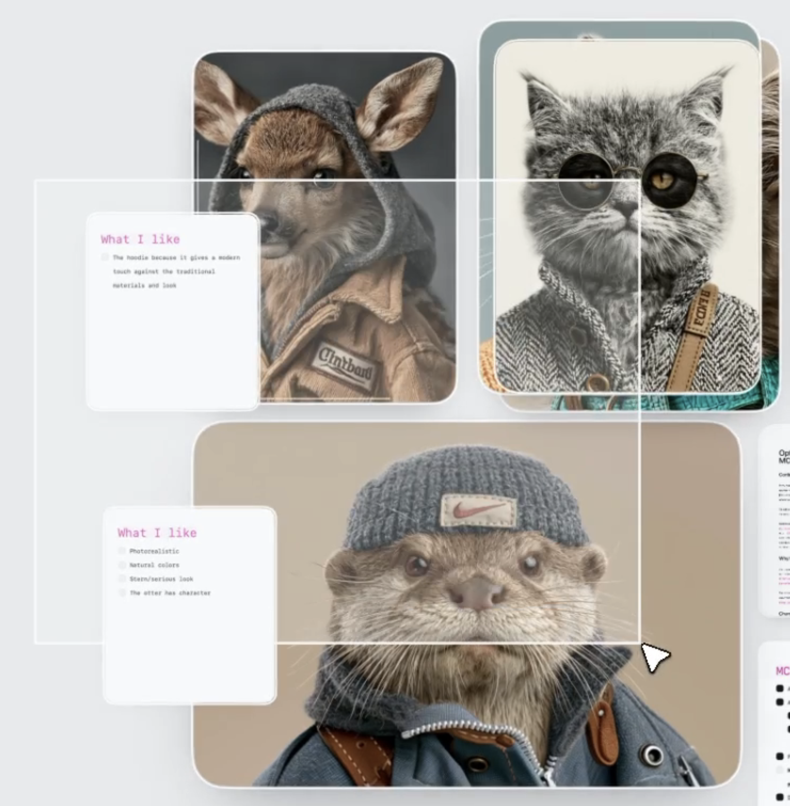
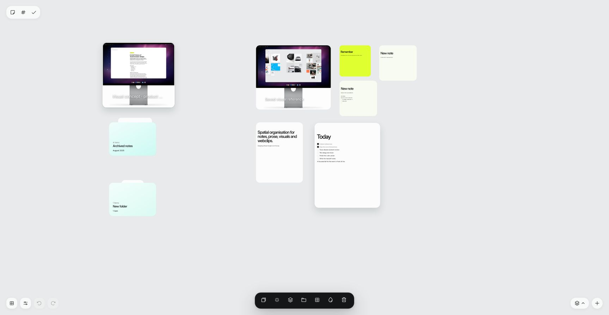
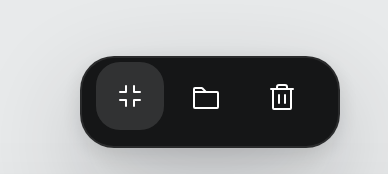
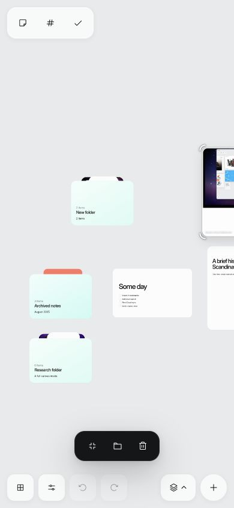
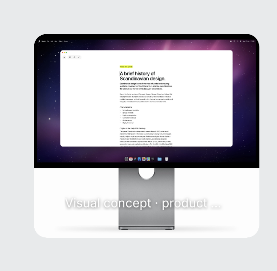
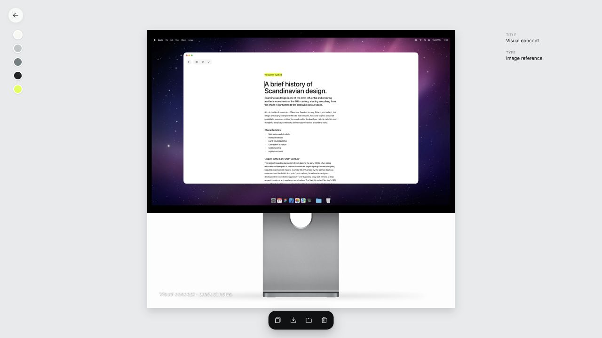

Reference — multi-selection

Implementation — multi-selection

Reference — selected command bar

Implementation — phone selection

Reference — image detail

Implementation — retained image detail
